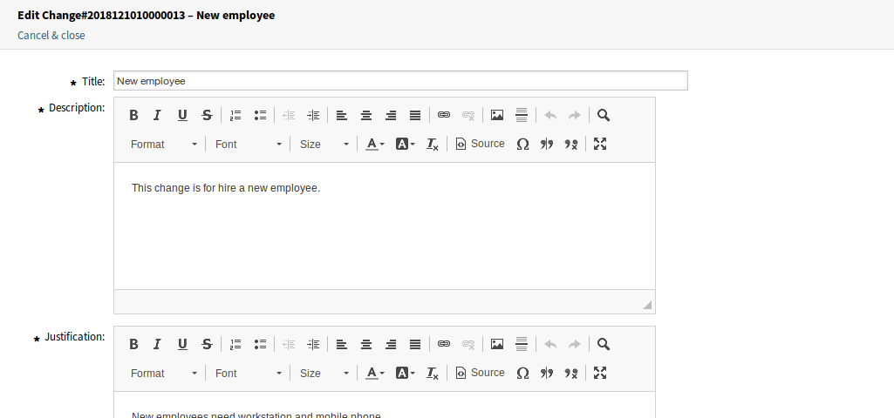
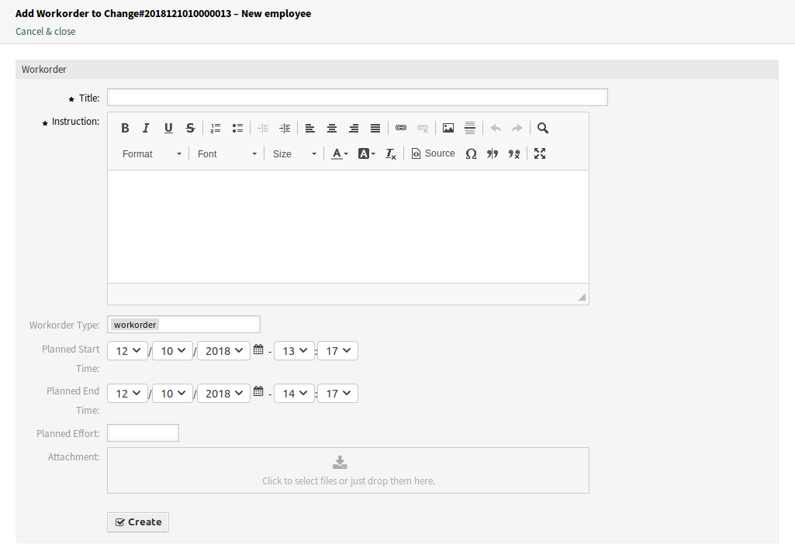
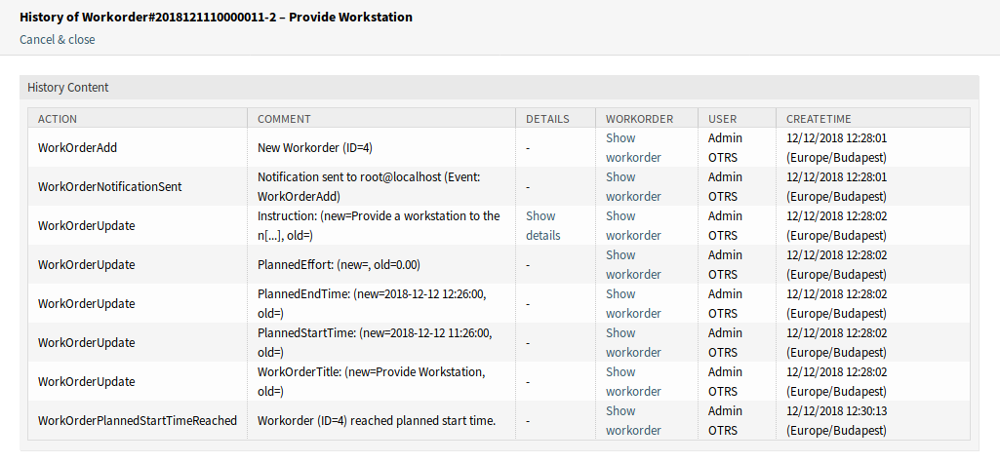
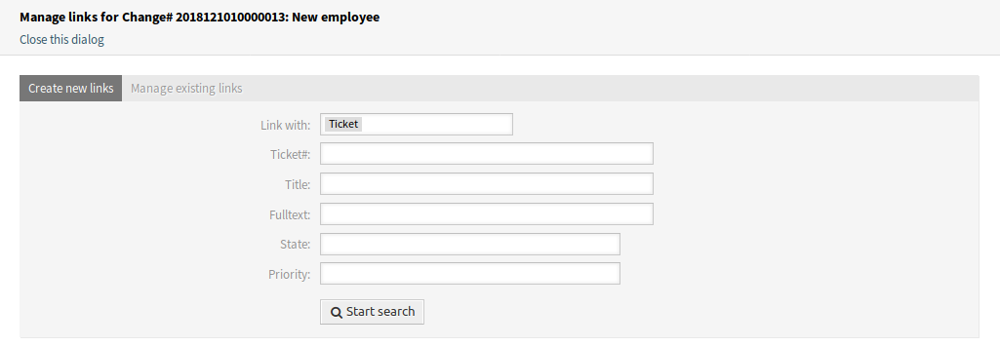
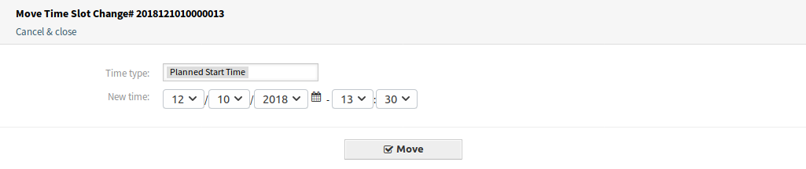

Overview¶
This screen gives an overview of changes.

ITSM Changes Overview Screen
Changes can be filtered by clicking on a state name in the header of the overview widget. There is an option All to see all changes. The numbers after the state names indicates how many changes are in each states.
See also
See setting ITSMChange::Frontend::AgentITSMChange###Filter::ChangeStates to define the work order states that will be used as filters in the overview.
To limit the number of displayed changes per page:
- Click on the gear icon in the top right corner of the overview header.
- Select the maximum number of changes displayed per page.
- Click on the Submit button.
The displayed attributes can be defined via the system configuration. Not all attributes are displayed by default. The possible attributes are:
ActualEndTime- Date and time at which the change implementation was completed.
ActualStartTime- Date and time at which the change implementation began.
Category- Category or type of change.
ChangeBuilder- Name of the change builder.
ChangeManager- Name of the change manager.
ChangeNumber- System generated change number.
ChangeState- Change status.
ChangeStateSignal- Change status indicator to be shown as traffic light.
ChangeTime- Date and time at which the change was modified.
ChangeTitle- Name of the change.
CreateTime- Date and time at which the change was created.
DynamicField_ChangeFieldName- Dynamic field that is associated to the work order.
Impact- Expected effect of the change.
PlannedEndTime- Projected change implementation completion date and time.
PlannedStartTime- Planned change implementation start date and time.
Priority- Priority level of the change.
RequestedTime- Customer’s desired implementation date.
Services- Services affected by the change.
WorkOrderCount- Number of work orders related to the change.
See also
See setting ITSMChange::Frontend::AgentITSMChange###ShowColumns to define the displayed attributes.
To see the details of a change:
- Click on the row of a change.

ITSM Change Zoom Screen
The Change Zoom screen has an own menu.
- Back
- This menu item goes back to the previous screen.
- History
This menu item opens a new window to see the history of the change.

ITSM Change History Screen
- This menu item opens a PDF file to show the printer friendly version of the screen. You can save or print this PDF file.
- Edit
This menu item opens a new window to edit the change.
Edit ITSM Change Screen
- Involved Persons
Use this screen to add persons to the change.

Involved Persons Screen
- Change Manager *
Assigns change manager privileges to an agent for the current change.
Note
Only those agent can be added as change manager, who is member of group itsm-change-manager.
- Change Builder *
Defines the agent who processes and defines the current change. When creating a new change, the current agent is automatically entered as the change builder.
Note
Only those agent can be added as change builder, who is member of group itsm-change-bulder.
- Change Advisory Board
- Defines a group of people which can include agents and customers.
- Add Workorder
Use this window to add new work orders to the change.
Add Work Order Screen
The following settings are available when adding or editing this resource. The fields marked with an asterisk are mandatory.
- Title *
- The name of this resource. Any type of characters can be entered to this field including uppercase letters and spaces. The name will be displayed in the overview table.
- Instruction *
- Longer text description of the work order about what to do here.
- Workorder Type
- Select a type for the work order. The types are defined in class
ITSM::ChangeManagement::WorkOrder::Typein the General Catalog. - Planned Start Time
- Select a planned start time for the work order.
- Planned End Time
- Select a planned end time for the work order.
- Planned Effort
- Add a value in any work unit to specify the planned effort.
- Attachment
- Enables related files and documents to be attached.
After adding a work order, the Work Order Zoom screen will be opened in a new browser tab.

Work Order Zoom Screen
The Work Order Zoom screen has an own menu.
- Back
- This menu item goes back to the previous screen.
- History
This menu item opens a new window to see the history of the work order.
Work Order History Screen
- This menu item opens a PDF file to show the printer friendly version of the screen. You can save or print this PDF file.
- Edit
This menu item opens a new window to edit the work order.

Edit Work Order Screen
- Move following workorders accordingly
- If this is checked, the subsequent work orders will be moved in time according to times set in Planned Start Time and Planned End Time fields.
- Workorder Agent
Use this menu item to assign an agent to the work order.

Edit Work Order Agent Screen
Note
Only those agent can be added as work order agent, who is member of group itsm-change.
- Report
Use this menu item to document the progress made on the work order. This screen can be used as log of work order.

Work Order Report Screen
- Report *
- This is the body of the report. As there is only the same text area for all reports, it is suggested to add timestamps to each entries.
- State
The next state of the work order.
See also
The possible next states are defined in the work order State Machine, but they can be filtered using conditions.
- Accounted Time
- Add the accounted time in time units.
- Attachment
- Enables related files and documents to be attached.
- Link
This menu item opens the standard link screen of OTRS. Work orders can be linked to services or tickets. Existing links can also be managed here.
Link Work Order Screen
- Template
Use this screen to save the work order as template.

Save Work Order as Template
- Template Name *
- The name of this resource. Any type of characters can be entered to this field including uppercase letters and spaces. The name will be displayed in the overview table.
- Comment
Add additional information to this resource.
Note
It is recommended to add a version number in this field to be is easier to identify the correct template.
- Reset States
- All states are reset if selecting Yes.
- Validity
- Set the validity of this resource. Each resource can be used in OTRS only, if this field is set to valid. Setting this field to invalid or invalid-temporarily will disable the use of the resource.
- Delete
Use this menu item to delete the work order.

Delete Work Order Dialog
- This menu item opens a PDF file to show the printer friendly version of the screen. You can save or print this PDF file.
- Edit
This menu item opens a new window to edit the change.
Edit ITSM Change Screen
- Add Workorder (from Template)
Use this screen to add a work order from template.

Add Work Order From Template Screen
- Template *
- Select a work order template from the list of work order templates.
- Time type
- Select the time type that you want to redefine in the next field.
- New time
- Specify a new time for the time type selected above.
See also
Work order templates can be created with Template menu item in the Work Order Zoom screen.
- Conditions
Use this screen to add new conditions to the change.

Condition Overview Screen
Note
The defined conditions are not executed in a certain order.
To add a new condition:
- Click on the Add new condition button.
To edit a condition:
- Click on a condition in the list of conditions.
To delete a condition:
- Click on the trash icon in the list of conditions.
- Click on the OK button in the confirmation dialog.
Add Condition and Edit Condition screens consist of three widgets.

Add Condition Screen
In the Condition widget:
- Name *
The name of this resource. Any type of characters can be entered to this field including uppercase letters and spaces. The name will be displayed in the overview table.
Note
Conditions are sorted by name. Use 100, 200, etc. as prefix to set the sorting order. All conditions will be evaluated regardless of its position.
- Matching
- Matching type of expressions.
- Validity
- Set the validity of this resource. Each resource can be used in OTRS only, if this field is set to valid. Setting this field to invalid or invalid-temporarily will disable the use of the resource.
- Comment
- Add additional information to this resource. It is recommended to always fill this field as a description of the resource with a full sentence for better clarity, because the comment will be also displayed in the overview table.
In the Expressions widget the expression can be added. The matching type of expressions (OR or AND) can be defined above.
In the Actions widget the actions can be added to be executed if the expressions are met. The operator set enables the selected attribute to be set at a specific value, if the defined condition is true. On the other hand, the operator lock freezes the selected attribute, for as long as the defined condition is true, i.e. a manual change is not possible.
Note
Actions are processed in the order they were set.
- Link
This menu item opens the standard link screen of OTRS. Changes can be linked to any other objects like FAQ articles, services, tickets or configuration items. Existing links can also be managed here.
Link ITSM Change Screen
- Move Time Slot
Use this screen to shift the planned change implementation time frame.
Move Time Slot Screen
- Time type
- Select the time type that you want to redefine in the next field.
- New time
- Specify a new time for the time type selected above.
- Template
Use this screen to save the change as template. New changes can be start from template in New (From Template) menu item.
Save Change as Template
- Template Name *
- The name of this resource. Any type of characters can be entered to this field including uppercase letters and spaces. The name will be displayed in the overview table.
- Comment
Add additional information to this resource.
Note
It is recommended to add a version number in this field to be is easier to identify the correct template.
- Reset States
- All states are reset if selecting Yes.
- Validity
- Set the validity of this resource. Each resource can be used in OTRS only, if this field is set to valid. Setting this field to invalid or invalid-temporarily will disable the use of the resource.